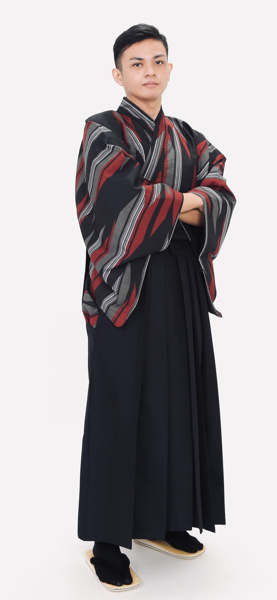

12月23日、フィリピン・マニラで生まれ育ちました。世界を旅することを長年の夢としてきました。新しいことに挑戦することにスリルと魅力を感じ、常に未知の体験や冒険を求めてきました。
その過程で、コンピューターを通じて「ものづくり」の楽しさに出会い、
現在はフロントエンド開発とプログラミングのスキルを活かし、直感的で使いやすいシステムを提供できるエンジニアを目指しています。デザインとロジックを両立させた開発を重視し、
多様な価値観を尊重するIT企業で成長したいと考えています。日本での生活を通じて日本語力を磨き、JLPT N2合格やTOEIC 900点の成果を得ましたが、それ以上に、多様な環境で人と関わる経験を通して人間的に
成長し、コミュニケーション能力に自信を持てるようになったことを大切にしています。趣味はチェス、カラオケ、ファッション、旅行、そしてテキストベースRPGの制作です。
フロントエンド開発とプログラミングの両方を活かし、効率的でありながら直感的で使っていて心地よいシステムを作れるシステムエンジニアを目指しています。デザインとロジックの両面で自分のアイデアを表現するのが好きなので、スムーズで思いやりのある、人に寄り添った開発を大切にしています。多様な価値観を尊重しながら、自分の強みを活かせるIT企業で成長していきたいと考えています。
人物・ Who am I?
私は常に新しいことへの挑戦を楽しみ、未経験の分野に対して強い好奇心を持っています。また、「初めて」の体験から得られる気づきや学びを大切にしております。
世界を旅し、美しい風景や印象的な場所に触れ、背景にある歴史を知ることに情熱を持っている。最近では新たな情熱も見つかり、今後はその両方を追求していきたいと考えている。
自分の作ったもので誰かが笑顔になったり、心を動かされたりすることが、私にとって大きな原動力です。その経験があるからこそ、もっと楽しくてワクワクするアイデアを生み出したいと感じています。
What I do
ユーザーが使いやすくて、迷わず操作できるウェブサイトを作りつつ、見た目にもこだわっています。HTMLとCSSの最新技術を使って、機能性とデザインをうまく両立させています。
最初にC++を学んだことでプログラミングの基礎思考が身につき、JavaやPythonの理解もよりスムーズになりました。目的や課題に応じて言語を柔軟に使い分けながら、効率的で実用的な開発を常に意識しています。
個人や学校で作成したプロジェクトを中心に投稿しています。GitHubはポートフォリオとしてだけでなく、自分の成長を記録し、読みやすく保守しやすいコードを書くための場として活用しています。
趣味・好きなど
基本的に気分や雰囲気に合ったジャンルなら何でも聴きますが、全体的にはカントリーソングが好きです。心が落ち着くし、自分の声に合っていれば、日常でもカラオケでもよく歌っています。
ファッションを通して、自分の個性を表現し、色・スタイル・季節に合ったコーディネートを選ぶことを楽しんでいます。自由な時間には、自分のポートフォリオを作りながら、新しいクリエイティブなアイデアを探求することも楽しんでいます。
ただの旅行ではなく、まるでまだ誰にも発見されていない世界を探検するような体験を求めている。それぞれの場所にある物語や歴史、伝説に惹かれ、その地の空気を感じながら、まるで過去の時代に生きているかのように体感したいと考えている。